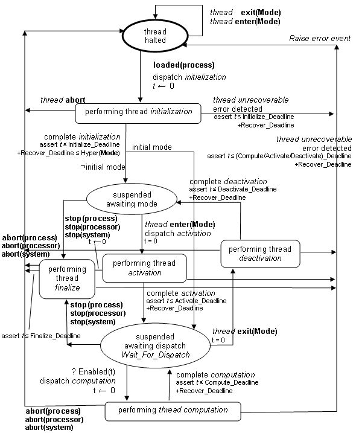
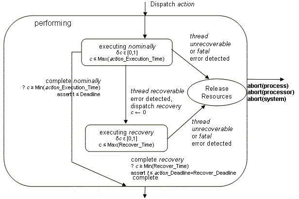

Previous
Next
Previous
Next 
| 5.3 Threads |
A
thread represents a sequential flow of control that executes instructions within a binary image
produced from source text. A thread models a schedulable unit that transitions between various
scheduling states. A thread always executes within the virtual address space of a process, i.e.,
the binary images making up the virtual address space must be loaded before any thread can
execute in that virtual address space.
Systems
modeled in AADL can have operational modes (see Section 11). A thread can be active
in a particular mode and inactive in another mode. As a result a thread may transition between
an active and inactive state as part of a mode switch. Only active threads can be dispatched and
scheduled for execution. Threads can be dispatched periodically or as the result of explicitly
modeled events that arrive at event ports, event data ports, or at a predeclared in event port called
Dispatch.
Completion of the execution of a thread dispatch will result in an event being
delivered through the predeclared Complete event out port if it is connected.
If
the thread execution results in a fault that is detected, the source text may handle the error.
If
the error is not handled in the source text, the thread is requested to recover and prepare for the
next dispatch. If an error is considered thread unrecoverable, its occurrence is propagated as
an
event through the predeclared Error out event data port.
Legality
Rules
|
Category
|
Type
|
Implementation
|
|
thread
|
Features:
Flow specifications: yes
Properties: yes
|
Subcomponents:
Subprogram calls: yes
Connections: yes
Flows: yes
Modes: yes
Properties: yes
|
A
thread type declaration can contain port, port group, server subprogram declarations as well as
requires and provides data access declarations. It can also contain a flow specifications and
property associations.
A
thread component implementation can contain data declarations, a calls subclause, a flows
subclause, a modes subclause, and thread property associations.
A
thread or any of its features may not contain an explicit Dispatch in event or event data port
declaration, nor a Complete
or Error out
event or event data port declaration.
The Compute_Entrypoint property must
have a value that indicates the source code to
execute after a thread has been dispatched. Other entrypoint properties are optional, i.e., if
a
property value is not defined, then the entrypoint is not called.
The Period property must have a value
if the Dispatch_Protocol
property value is
periodic or sporadic.
Standard
Properties
--
Properties related to source text
Source_Text: inherit list
of aadlstring
Source_Language:
Supported_Source_Languages
--
Properties specifying memory requirements of threads
Source_Code_Size:
Size
Source_Data_Size:
Size
Source_Stack_Size:
Size
Source_Heap_Size:
Size
--
Properties specifying thread dispatch properties
Dispatch_Protocol:
Supported_Dispatch_Protocols
Period:
inherit Time
--
the default value of the deadline is that of the period
Deadline:
Time => inherit value(Period)
--
Properties specifying execution entrypoints and timing constraints
Initialize_Execution_Time:
Time_Range
Initialize_Deadline:
Time
Initialize_Entrypoint: aadlstring
Compute_Execution_Time:
Time_Range
Compute_Deadline:
Time
Compute_Entrypoint: aadlstring
Activate_Execution_Time:
Time_Range
Activate_Deadline:
Time
Activate_Entrypoint: aadlstring
Deactivate_Execution_Time:
Time_Range
Deactivate_Deadline:
Time
Deactivate_Entrypoint: aadlstring
Recover_Execution_Time:
Time_Range
Recover_Deadline:
Time
Recover_Entrypoint: aadlstring
Finalize_Execution_Time:
Time_Range
Finalize_Deadline:
Time
Finalize_Entrypoint: aadlstring
--
Properties specifying constraints for processor and memory binding
Allowed_Processor_Binding_Class:
inherit list of classifier
(processor, system)
Allowed_Processor_Binding: inherit list of reference
(processor,
system)
Allowed_Memory_Binding_Class:
inherit list of
classifier (memory, system, processor)
Allowed_Memory_Binding: inherit
list of reference (memory, system,
processor)
Not_Collocated: list of reference
(data, thread, process, system,
connections)
Allowed_Connection_Binding_Class:
inherit list of classifier(processor, bus,
device)
Allowed_Connection_Binding: inherit list of reference
(bus, processor,
device)
Actual_Connection_Binding: inherit reference
(bus, processor, device)
--
Binding value filled in by binding tool
Actual_Processor_Binding: inherit reference
(processor)
Actual_Memory_Binding: inherit reference
(memory)
--
property indicating whether the thread affects the hyperperiod
--
for mode switching
Synchronized_Component: inherit aadlboolean => true
--
property specifying the action for executing thread at actual mode
switch
Active_Thread_Handling_Protocol:
inherit Supported_Active_Thread_Handling_Protocols
=> value(Default_Active_Thread_Handling_Protocol)
Active_Thread_Queue_Handling_Protocol:
inherit enumeration (flush, hold) => flush
Semantics
Thread
semantics are described in terms of thread states, thread dispatching, thread scheduling
and execution, and fault handling. Thread execution semantics apply once the appropriate binary
images have been loaded into the respective virtual address space (see Section 5.5).
Threads
may be part of modes of containing components. In that case a thread is active, i.e.,
eligible for dispatch and scheduling, only if the thread is part of the current mode.
Threads
can contain mode subclauses that define thread-internal operational modes. Threads can
have property values that are different for different thread-internal modes.
Every
thread has a predeclared in event port named Dispatch. If this port is connected, i.e.,
named as the destination in a connection declaration, then the arrival of an event results in the
dispatch of the thread. If the Dispatch port is connected, then the arrival of an event on an
explicitly declared event ports or event data ports will result in the queuing of the event or event
data without causing a thread dispatch. When the Dispatch port is connected, only events
arriving at this port will cause a thread to be dispatched.
Periodic
threads ignore any events arriving through explicitly declared event or event data
connections or through an event connection to the Dispatch port. Periodic thread dispatches
are solely determined by the clock according to the time interval specified through the Period
property value.
Every
thread has a predeclared out event port named Complete. If this port is connected, i.e.,
named as the source in a connection declaration, then an event is raised implicitly on this port
when the execution of a thread dispatch completes.
Every
thread has a predeclared out event data port named Error. If this port is connected,
i.e., named as the source in a connection declaration, then an event is raised implicitly on this
port when a thread unrecoverable error is detected. This supports the propagation of thread
unrecoverable errors as event data for fault handling by a thread. The source text implementing
the fault handling thread may map the error represented by event data into an event that can
trigger a mode switch through a Raise_Event call in its source text.
NOTES:
Mode transitions can only refer to event ports as their trigger. This means that Error ports cannot be
directly connected to mode transitions. Instead, they have to be connected to a thread whose source
text
interprets the data portion to identify the error type and then raise an appropriate event through an
out
event port that triggers the appropriate mode transition. Such a thread typically plays the role
of a
system health monitor that makes system reconfiguration decisions based on the nature and frequency
of detected faults.
Thread
States and Actions
A
thread executes a code sequence in the associated source text when dispatched and
scheduled to execute. This code sequence is part of a binary image accessible in the virtual
address space of the containing process. It is assumed that the process is bound to the memory
that contains the binary image (see Section 5.5).
A
thread goes through several states. Thread state transitions under normal operation are
described here and illustrated in Figure 5. Thread state transitions under fault conditions are
described in the Execution Fault Handling section below.
The
initial state is thread halted. When the loading of the virtual address space as declared by
the
enclosing process completes (see Section 5.5), a thread is initialized by performing an
initialization code sequence in the source text. Once initialization is completed the thread enters
the suspended awaiting dispatch state if the thread is part of the initial mode, otherwise it
enters
the suspended awaiting mode state. When a thread is in the suspended awaiting mode
state it
cannot be dispatched for execution.
When
a mode switch is initiated, a thread that is part of the old mode and not part of the new
mode exits the mode by transitioning to the suspended awaiting mode state after performing
thread deactivation during the mode change in progress system state (see
Figure 18). If the
thread is periodic and its Synchronized_Component property is true, then its period is taken
into consideration to determine the actual mode switch time (see Sections 11 and 12.3 for
detailed timing semantics of a mode switch). If an aperiodic or a sporadic thread is executing a
dispatch when the mode switch is initiated, its execution is handled according to the
Active_Thread_Handling_Protocol
property. A thread that is not part of the old mode and
part of the new mode enters the mode by transitioning to the suspended awaiting dispatch
state
after performing thread activation.
When
in the suspended awaiting dispatch state, a thread is awaiting a dispatch request for
performing the execution of a compute source text code sequence as specified by the
Compute_Entrypoint
property. When a dispatch request is received for a thread, data, event
information, and event data is made available to the thread through its port variables (see Sections
8.1 and 9.1.1). The thread is then handed to the scheduler to perform the computation. Upon
successful completion of the computation, the thread returns to the suspended awaiting dispatch
state. If a dispatch request is received for a thread while the thread is in the compute state,
this
dispatch request is handled according to the specified Overflow_Handling_Protocol for the
event or event data port of the thread.
A
thread may enter the thread halted state, i.e., will not be available for future dispatches and
will
not be included in future mode switches. If re-initialization is requested for a thread in the thread
halted state (see Section 5.5), then its virtual address space is reloaded, the processor to which
the thread is bound is restarted, or the system instance is restarted.
A
thread may be requested to enter its thread halted state through a stop request after
completing the execution of a dispatch or while not part of the active mode. In this case, the
thread may execute a finalize entrypoint before entering the thread halted state. A thread
may
also enter the thread halted state immediately through an abort request.
Figure
5 presents the top-level hybrid automaton (using the notation defined in Section 1.6) to
describe the dynamic semantics of a thread. Two succeeding figures elaborate on the
Performing substate
(Figure 6 and Figure 7). The bold faced edge labels in Figure 5 indicate
that the transitions marked by the label are coordinated across multiple hybrid automata. The
scope of the labels is indicated in parentheses, i.e., interaction with the process hybrid
automaton (Figure 8) and with system wide mode switching (see Section 12.1). The hybrid
automata contain assertions. In a time-partitioned system these assertions will be satisfied. In
other systems they will be treated as anomalous behavior.
For
each of the states representing a performing thread action such as initialize, compute,
recover, activate, deactivate, and finalize, an execution entrypoint to a code sequence in the
source text can be specified. Each entrypoint may refer to a different source text code sequence
which contains the entrypoint, or all entrypoints of a thread may be contained in the same source
text code sequence. In the latter case, the source text code sequence can determine the context
of the execution through a Dispatch_Status runtime service call (see Runtime Support).
The execution semantics for these entrypoints is described in the Thread Scheduling and
Execution section that follows.
An initialize
entrypoint is executed once during system initialization and allows threads to perform
application specific initialization, such as insuring the correct initial value of its out and in
out
ports.
The activate
and deactivate entrypoints are executed during mode transitions and allow threads
to take user-specified actions to save and restore application state for continued execution
between mode switches.These entrypoints may be used to reinitialize application state due to a
mode transition. Activate entrypoints can also ensure that out and in out ports
contain correct
values for operation in the new mode.
The compute
entrypoint represents the code sequence to be executed on every thread dispatch.
Each server subprogram represents a separate compute entrypoint of the thread. Server
subprogram calls are thread dispatches to the respective entrypoint. Event ports and event data
ports can have port specific compute entrypoints to be executed when the corresponding event or
event data dispatches a thread.
A recover
entrypoint is executed when a fault in the execution of a thread requires recovery
activity to continue execution. This entrypoint allows the thread to perform fault recovery actions
(for a detailed description see the Execution Fault Handling section below).
A
finalize entrypoint is executed when a thread is asked to terminate as part of a process unload
or process stop.
If
no value is specified for any of the entrypoints, execution is considered as immediately
completed without consumption of execution time.

Figure
5 Thread States and Actions
Thread
Dispatching
The Dispatch_Protocol property of a
thread determines the characteristics of dispatch
requests to the thread. This is modeled in the hybrid automaton in Figure 5 by the Enabled(t)
function and the Wait_For_Dispatch
invariant. The Enabled
function determines when a
transition to performing thread computation will occur. The Wait_For_Dispatch invariant
captures the condition under which the Enabled function is evaluated. The consequence of a
dispatch is the execution of the entrypoint source text code sequence at its current execution
position. This position is set to the first step in the code sequence and reset upon completion
(see Thread Scheduling and Execution below).
For
a thread whose dispatch protocol is periodic, a dispatch request is issued at time intervals
of the specified Period
property value. The Enabled
function is t = Period.
The
Wait_For_Dispatch
invariant is t £ Period. The dispatch occurs
at t = Period.
For
a thread whose dispatch protocol is sporadic, a dispatch request is the result of an event or
event data arriving at an event or event data port of the thread, or a remote subprogram call arriving
at a server subprogram feature of the thread. The time interval between successive dispatch
requests will never be less than the associated Period property value. The
Overflow_Handling_Protocol property
for event ports specifies the action to take when
events arrive too frequently, i.e., the time between successive
events is less than what is
specified in the associated Period property. These events are either ignored, queued until the
end of the period (and then dispatched), or are treated as an error. The Enabled function is t ≥
Period. The Wait_For_Dispatch invariant is true. The dispatch actually occurs when the
guard on the dispatch transition is true and a dispatch request arrives in the form of an event at an
event port with an empty queue, or an event is already queued when the guard becomes true, or a
remote subprogram call arrives when the guard is true.
For
a thread whose dispatch protocol is aperiodic, a dispatch request is the result of an event
or event data arriving at an event or event data port of the thread, or a remote subprogram call
arriving at a server subprogram feature of the thread. There is no constraint on the inter-arrival
time of events, event data or remote subprogram calls. The Enabled function is true. The
Wait_For_Dispatch
invariant is true.
The dispatch actually occurs immediately when a
dispatch request arrives
in the form of an event at an event port with an empty queue, or if an
event is already queued when a dispatch execution completes, or a remote subprogram call
arrives.
If
several events or event data occur logically simultaneously and are routed to the same port of
an aperiodic
or sporadic
thread, the order of arrival for the purpose of event handling
according the above rules is implementation-dependent. If several events or event data occur
logically simultaneously and are routed to the different ports of the same aperiodic or
sporadic thread,
the order of event handling is determined by the Urgency property associated
with the ports.
For
a thread whose dispatch protocol is background, the thread is dispatched immediately
upon completion of its initialization entrypoint execution. The Enabled function is true. The
Wait_For_Dispatch
invariant is t = 0.
The dispatch occurs immediately. Note that
background threads do not have their current execution position reset on a mode switch. In other
words, the background thread will resume execution from where it was previously suspended due
to a mode switch. A background thread is scheduled to execute such that all other threads’
timing requirements are met. If more than one background thread is dispatched, the processor’s
scheduling protocol determines how such background threads are scheduled. For example, a
FIFO protocol for background threads means that one background thread at a time is executed,
while fair share means that all background threads will make progress in their execution.
Thread
Scheduling and Execution
When
a thread action is computation, the execution of the thread’s entrypoint source text code
sequence is managed by a scheduler. This scheduler coordinates all thread executions on one
processor as well as concurrent access to shared resources. While performing the execution of
an entrypoint the thread can execute nominally or execute recovery (see Figure 7). While
executing an entrypoint a thread can be in one of five substates: ready, running, awaiting
resource, awaiting return, and awaiting resume (see Figure 6).
A
thread initially enters the ready state. A scheduler selects one thread from the set of
threads in
the ready state to run on one processor according to a specified scheduling protocol. It ensures
that only one thread is in the running state on a particular processor. If no thread is
in the ready
state, the processor is idle until a thread enters the ready state. A thread will remain in the
running state until it completes execution of the dispatch, until a thread entering the ready state
preempts it if the specified scheduling protocol prescribes preemption, until it blocks on a shared
resource, or until an error occurs. In the case of completion, the thread transitions to the
suspended awaiting dispatch state, ready to service another dispatch request. In the case
of
preemption, the thread returns to the ready state. In the case of resource blocking, it transitions
to the awaiting resource state.
Resource
blocking can occur when two threads attempt to access shared data. Such access is
performed in a critical region. When a thread enters a critical region a Get_Resource operation
is performed on the shared data component. Upon exit from a critical region a
Release_Resource
operation is performed. A Concurrency_Control_Protocol property
value associated with the shared data component determines the particular concurrency control
mechanism to be used (see Section 5.1).
A
running thread may require access to shared resources such as shared data components
through a critical region. Such access is coordinated through a concurrency control mechanism
that implements the specified concurrency control protocol. These mechanisms may be blocking
such as the use of a semaphore or non-blocking such as non-preemption through priority ceiling
protocol. In the case of a blocking mechanism, a thread entering a critical region (via
Get_Resource)
may be blocked and enter the awaiting resource state. The thread transitions
out of the awaiting resource state into the ready state when another thread exits the critical region
(via Release_Resource).
Multiple threads may block trying to gain access to the same
resource; such access is mediated by the specified concurrency coordination protocol (see
Section 5.1).
The
time a thread resides in a critical region, i.e., the time it may block other threads from
entering the critical region, in worst case is the duration of executing one thread dispatch.
This
time may be reduced by specifying a call sequence within a thread and indicating the
subprogram(s) that require access to shared data, i.e., have to execute in a critical region.
When
a thread completes execution it is assumed that all critical regions have been exited, i.e.,
access control to shared data has been released. Otherwise, the execution of the thread is
considered erroneous.
Subprogram
calls to server subprograms are synchronous. A thread in the running state enters
the awaiting return state when performing a call to a subprogram whose service is performed by
a
server subprogram in another thread. The service request for the execution of the subprogram is
transferred to the server subprogram request queue of a thread as specified by the
Actual_Subprogram_Call
property that specifies the binding of the subprogram call to a
server subprogram feature in another thread. When the thread executing the corresponding server
subprogram completes and the result is available to the caller, the thread with the calling
subprogram transitions to the ready state.
A
background thread may be temporarily suspended by a mode switch in which the thread is not
part of the new mode, as indicated by the exit(Mode) in Figure 6. In this case, the thread
transitions to the awaiting resume state. If the thread was in a critical region, it will
be suspended
once it exits the critical region. A background thread resumes execution when it becomes part
of
the current mode again in a later mode switch. It then transitions from the awaiting resume state
into the ready state. A background thread must be allowed to exit any critical region before it
can
be suspended as result of a mode switch.

Figure
6 Thread Scheduling and Execution States
Execution
of any of these entrypoints is characterized by actual execution time (c) and by
elapsed time (t). Actual execution time is the time accumulating while a thread actually
runs on
a processor. Elapsed time is the time accumulating as real time since the arrival of the dispatch
request. Accumulation of time for c and t is indicated by their first derivatives dc and dt. A
derivative value of 1 indicates time accumulation and a value of 0 no accumulation. Figure 6
shows the derivative values for each of the scheduling states. A thread accumulates actual
execution time only while it is in the running state. The processor time, if any, required to
switch
a thread between the running state and any of the other states, which is specified in the
Thread_Swap_Execution_Time
property of the processor, is not accounted for in the
Compute_Execution_Time
property, but must be accounted for by an analysis tool.
The
execution time and elapsed time for each of the entrypoints are constrained by the entrypoint-
specific <entrypoint>_Execution_Time and entrypoint-specific
<entrypoint>_Deadline
properties specified for the thread. If no entrypoint specific
execution time or deadline is specified, those of the containing thread apply. There are three
timing constraints:
Actual
execution time, c, will not exceed the maximum entrypoint-specific execution time.
Upon
execution completion the actual execution time, c, will have reached at least the minimum
entrypoint-specific execution time.
Elapsed
time, t, will not exceed the entrypoint-specific deadline.
Execution
of a thread is considered anomalous when the timing constraints are violated. Each
timing constraint may be enforced and reported as an error at the time, or it may be detected after
the violation has occurred and reported at that time. An implementation must document its
handling of timing constraints.
Execution
Fault Handling
A
fault is defined to be an anomalous undesired change in thread execution behavior, possibly
resulting from an anomalous undesired change in data being accessed by that thread or from
violation of a compute time or deadline constraint. An error is a fault that is detected during
operation and is not handled as part of normal execution by that thread.
Detectable
errors may be classified as thread recoverable errors, or thread unrecoverable errors.
In the case of a thread recoverable error, the thread can recover and continue with the next
dispatch. Thread unrecoverable errors can be communicated as events and handled as thread
dispatches or mode changes. Alternatively, these errors may be reported as event data and
communicated to an error handling thread for further analysis and recovery actions.
For
thread recoverable errors, the thread affected by the error is given a chance to recover through
the invocation of the thread’s recover entrypoint. The recover entrypoint source text sequence
has
the opportunity to update the thread’s application state. Upon completion of the recover
entrypoint execution, the performance of the thread’s dispatch is considered complete. In
the
case of performing thread computation, this means that the thread transitions to the suspended
await dispatch state (see Figure 5), ready to perform additional dispatches. Concurrency control
on any shared resources must be released. This thread-level fault handling behavior is illustrated
in Figure 7.
In
the presence of a thread recoverable error, the maximum interval of time between the dispatch
of a thread and its returning to the suspensed awaiting dispatch state is the sum of the thread’s
compute deadline and its recover deadline. The maximum execution time consumed is the sum of
the compute execution time and the recover execution time. In the case when an error is
encountered during recovery, the same numbers apply.
A
thread unrecoverable error causes the execution of a thread to be terminated prematurely
without undergoing recovery. The thread unrecoverable error is reported as an error event through
the predeclared Error
event data port, if that port is connected. If this implicit error port is not
connected, the error is not propagated and other parts of the system will have to recognize the
fault through their own observations. In the case of a thread unrecoverable error, the maximum
interval between the dispatch of the thread and its returning to the suspensed awaiting dispatch
state is the compute deadline, and the maximum execution time consumed is the compute
execution time.
For
errors detected by the runtime system, error details are recorded in the data portion of the
event as specified by the implementation. For errors detected by the source text, the application
can choose its encoding of error detail and can raise an event in the source text. If the
propagated error will be used to directly dispatch another thread or trigger a mode change, only
an event needs to be raised. If the recovery action requires interpretation external to the raising
thread, then an event with data must be raised. The receiving thread that is triggered by the event
with data can interpret the error data portion and raise events that trigger the intended mode
transition.

Figure
7 Performing Thread Execution with Recovery
A
fault may be detected by the source text runtime system or by the application itself. Detection
of a fault in the source text runtime system can result in an exception that is caught and handled
within the source text. The source text exception handler may propagate the error to an
external
handler by raising an event or an event with data.
For
errors encountered by the source text runtime system, the error class is defined by the
developer.
A
timing fault during initialize, compute, activation, and deactivation entrypoint executions is
considered to be a thread recoverable error. A timing fault during recover entrypoint execution
is
considered to be a thread unrecoverable error.
If
any error is encountered while a thread is executing a recover entrypoint, it is treated as a
thread unrecoverable error, as predefined for the runtime system. In other words, an error during
recovery must not cause the thread to recursively re-enter the executing recovery state.
If
a fault is encountered by the application source text itself, it may explicitly raise an error
through a Raise_Error
service call on the Error port
with the error class as parameter. This
service call may be performed in the source text of any entrypoint. In the case of recovery
entrypoints, the error class must be thread unrecoverable.
Faults
may also occur in the execution platform. They may be detected by the execution platform
components themselves and reported through an event or event data port, as defined by the
execution platform component. They may go undetected until an application component such as
a health monitoring thread detects missing health pulse events, or a periodic thread detects
missing input. Once detected, such errors can be handled locally or reported as event data.
System
Synchronization Requirements
An
application system may consist of multiple threads. Each thread has its own hybrid
automaton state with its own c and t variables. This results in a set of concurrent
hybrid
automata. In the concurrent hybrid automata model for the complete system, ST is a single
real-
valued variable shared by all threads that is never reset and whose rate is 1 in all states. ST
is
called the global real time.
Two
periodic threads are said to be synchronized if, whenever they are both active in the current
system mode of operation, they are logically dispatched simultaneously at every global real time
ST that is a nonnegative integral multiple of the least common multiple of their periods, i.e.,
their
hyperperiod. Two threads are logically dispatched simultaneously if the order in which all
exchanges of control and data at that dispatch event are identical to the order that would occur if
those dispatches were exactly dispatched simultaneously in true and perfect real time. If all
periodic threads contained in an application system are synchronized, then that application
system is said to be synchronized. In this version of the standard, system instances are
synchronized. By default, all application system instances are synchronized, i.e., all periodic
threads contained in an application system must be synchronized.
Runtime
Support
The
following paragraphs define standard runtime services that are to be provided. The application
program interface for these services is defined in the applicable source language annex of this
standard. They are callable from within the source text.
A Raise_Event runtime service shall
be provided that allows a thread to explicitly raise an event
if the executing thread has the named port specified as out event port or an out event data port.
A Raise_Error runtime service shall
be provided that allows a thread to explicitly raise a thread
recoverable or thread unrecoverable error as specified by a runtime parameter.
If
a local subprogram calls Raise_Event, the event is routed according to the event connection
declaration associated with the subprogram call’s event port. If a server subprogram calls
Raise_Event,
the event is transferred to the subprogram call and routed according to the event
connection declaration associated with the subprogram call’s event port.
Subprograms
have event ports but do not have an error port. If a Raise_Error is called, it is
passed to the error port of the enclosing thread. If a Raise_Error is called by a server
subprogram, the error is passed to the error port of the thread executing the server subprogram.
Processing
Requirements and Permissions
Multiple
models of implementation are permitted for the dispatching of threads. One such model
is that a runtime executive contains the logic reflected in Figure 5 and calls on the different
entrypoints associated with a thread. This model naturally supports source text in a higher level
domain language.
An
alternative model is that the code in the source text includes a code pattern that reflects the
logic of Figure 5 through explicitly programmed calls to the standard Await_Dispatch runtime
service, including a repeated call (while loop) to reflect repeated dispatch of the compute
entrypoint code sequence.
Multiple
models of implementation are permitted for the implementation of thread entrypoints.
One such model is that each entrypoint is a possibly separate function in the source text that is
called by the runtime executive. In this case, the logic to determine the context of an error
is
included in the runtime system.
A
second model of implementation is that a single function in the source text is called for all
entrypoints. This function then invokes an implementer-provided Dispatch_Status runtime
service call to identify the context of the call and to branch to the appropriate code sequence.
This alternative is typically used in conjunction with the source text implementation of the
dispatch loop for the compute entrypoint execution.
A
method of implementing a system is permitted to choose how executing threads will be
scheduled. A method of implementation is required to verify to the required level of assurance
that the resulting schedule satisfies the period and deadline properties. That is, a method of
implementing a system should schedule all threads so that the specified timing constraints are
always satisfied.
The
use of the term “preempt” to name a scheduling state transition in Figure 6 does not imply
that preemptive scheduling disciplines must be used; non-preemptive disciplines are permitted.
Execution
times associated with transitions between thread scheduling states, for example
context swap times (specified as properties of the hosting processor), are not billed to the
thread’s actual execution time, i.e., are not reflected in the Compute_Time property value.
However, these times must be included in a detailed schedulability model for a system. These
times must either be apportioned to individual threads, or to anonymous threads that are
introduced into the schedulability model to account for these overheads. A method of processing
specifications is permitted to use larger compute time values than those specified for a thread in
order to account for these overheads when constructing or analyzing a system.
A
method of implementing a system must support the periodic dispatch protocol. A method of
implementation may support only a subset of the other standard dispatch protocols. A method of
implementation may support additional dispatch protocols not defined in this standard.
A
method of implementing the Raise_Event service call may provide an optional parameter that
permits the assignment of an Urgency value to the event. Such an Urgency value provides
control over the implementation-dependent ordering of events or event data. This is the case for
logically simultaneous events or event data arriving at the same event or event data port, and for
logically simultaneous events resulting in different mode transitions. This capability also allows
priority-based Queue_Processing_Protocols to be supported for event and event data ports.
A
method of implementing the Raise_Event service call may provide a status return value
indicating whether the raised event or event data connected to an event or event data port is
ignored on delivery to an event or event data port, or whether a raised event that triggers a mode
transition is ignored.
A
method of implementation may choose to generate the Get_Resource and
Release_Resource
calls in support of critical regions for shared data access as part of the
AADL runtime system generation, or it may choose to require the application programmer to
place those calls into the application code.
A
method of implementing a system may perform loading and initialization activities prior to the
start of system operation. For example, binary images of processes and initial data values may
be loaded by permanently storing them in programmable memory prior to system operation.
A
method of implementing a system must specify the set of errors that may be detected at
runtime. This set must be exhaustively and exclusively divided into those errors that are thread
recoverable or thread unrecoverable, and those that are exceptions to be handled by language
constructs defined in the applicable programming language standard. The set of errors classified
as source language exceptions may be a subset of the exceptions defined in the applicable
source language standard. That is, a method of implementation may dictate that a language-
defined exceptional condition should not cause a runtime source language exception but instead
immediately result in an error. For each error that is treated as a source language exception,
if
the source text associated with that thread fails to properly catch and handle that exception, a
method of implementation must specify whether such unhandled exceptions are thread
recoverable or thread unrecoverable errors.
A
consequence of the above permissions is that a method of implementing a system may
classify all errors as thread unrecoverable, and may not provide an executing recovery scheduling
state and transitions to and from it.
A
method of implementing a system may enforce, at runtime, a minimum time interval between
dispatches of sporadic threads. A method of implementing a system may enforce, at runtime,
the minimum and maximum specified execution times. A method of implementing a system may
detect at runtime timing violations.
A
method of implementing a system may support handling of errors that are detected while a
thread is in the suspended, ready, or blocked state. For example, a method of implementation
may detect event arrivals for a sporadic thread that violate the specified period. Such errors
are to
be kept pending until the thread enters the executing state, at which instant the errors are raised
for that thread and cause it to immediately enter the recover state.
If
alternative thread scheduling semantics are used, a thread unrecoverable error that occurs in
the perform thread initialization state may result in a transition to the perform thread recovery
state and thence to the suspended awaiting mode state, rather than to the thread halted state.
The deadline for this sequence is the sum of the initialization deadline and the recovery deadline.
If
alternative thread scheduling semantics are used, a method of implementation may
prematurely terminate threads when a system mode change occurs that does not contain them,
instead of entering suspended awaiting mode. Any blocking
resources acquired
by the thread
must be released.
If
alternative thread scheduling semantics are used, the load deadline and initialize deadline may
be greater than the period for a thread. In this case, dispatches of periodic threads shall not
occur at any dispatch point prior to the initialization deadline for that periodic thread.
This
standard does not specify which thread or threads perform virtual address space loading.
This may be a thread in the runtime system or one of the application threads.
NOTES:
The deadline of a calling thread will impose an end-to-end deadline on all activities
performed by or on
behalf of that thread, including the time required to perform any server subprogram calls made by that
thread. The deadline property of a server subprogram may be useful for scheduling methods that
assign intermediate deadlines in the course of producing an overall end-to-end system schedule.